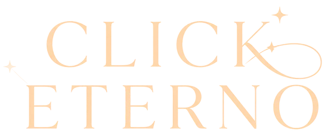

404
Esta dirección no existepero la fiesta sí
Puede que el link esté viejo o que se haya colado una letra de más. Estas son las cuatro puertas:
Escribinos por WhatsAppO volvé a la página de inicio.

404
Puede que el link esté viejo o que se haya colado una letra de más. Estas son las cuatro puertas:
Escribinos por WhatsAppO volvé a la página de inicio.